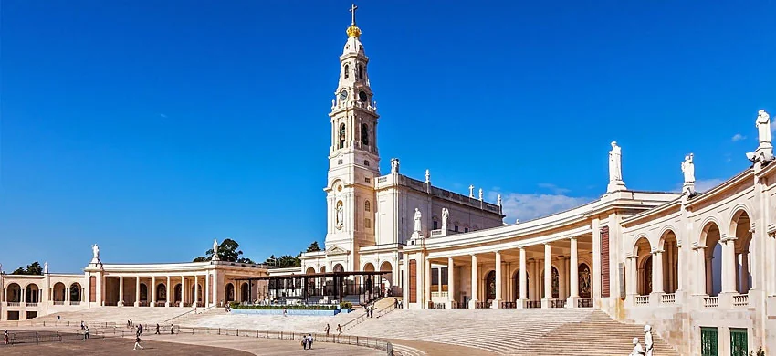
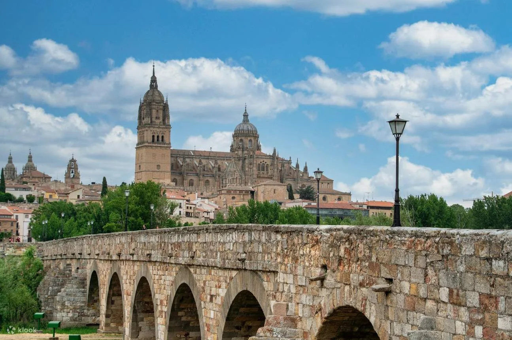
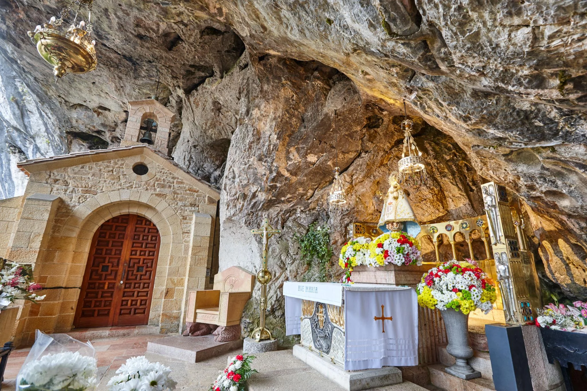
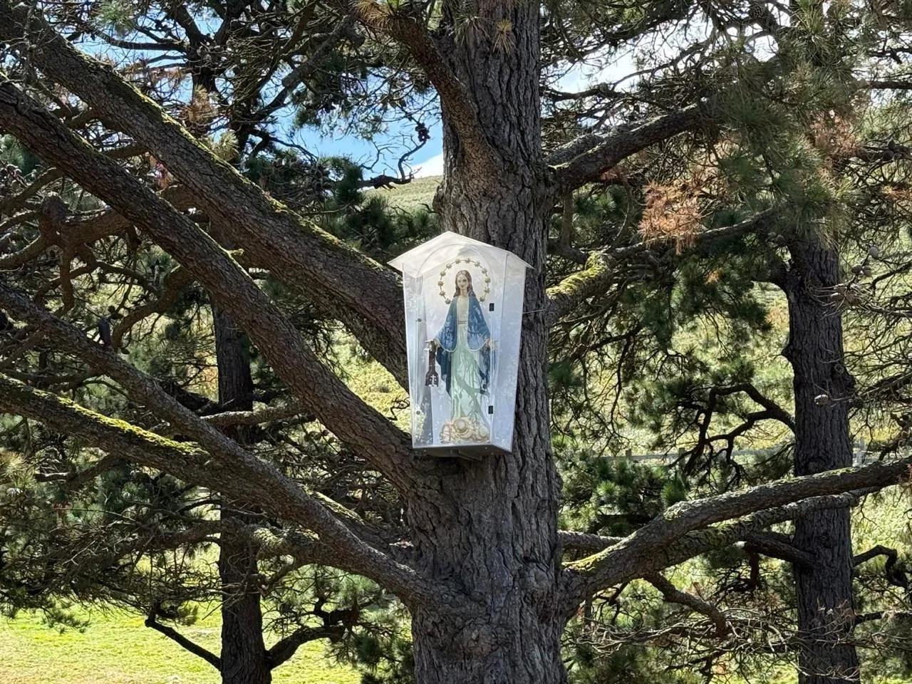
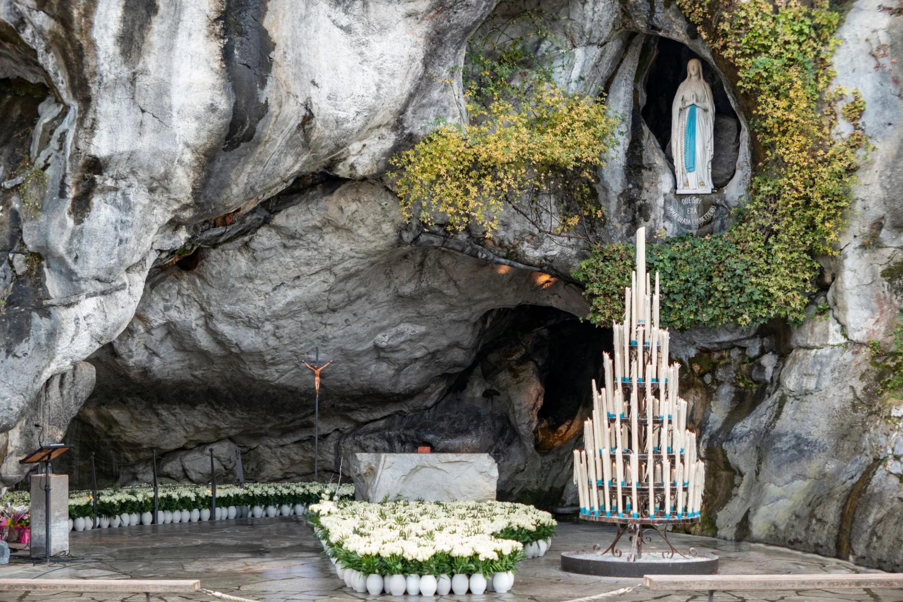
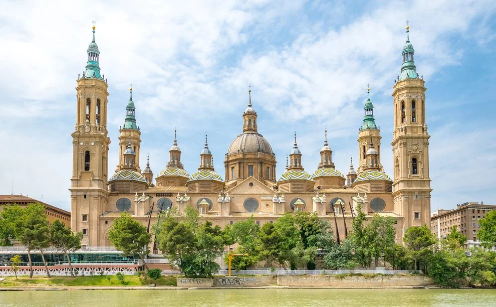
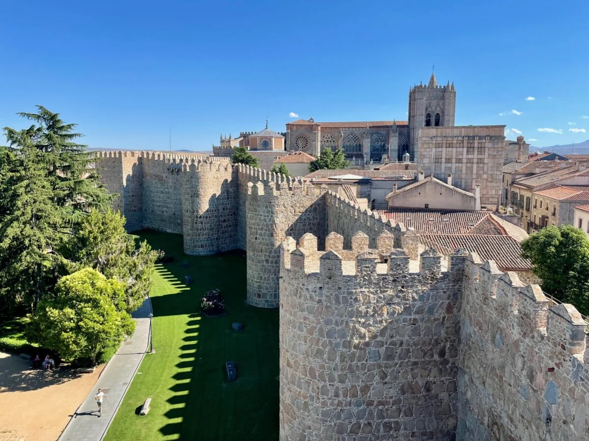

Peregrinación Mariana por Fátima, Lourdes y España: De la mano de María hacia Jesús
Nuestra peregrinación mariana por Portugal, España y Francia será mucho más que un viaje por Europa: será una experiencia de fe, oración y encuentro con Jesús, guiados por el amor de la Virgen María.
Emprenderemos un camino con los pies y con el corazón. Visitaremos algunos de los santuarios marianos más importantes de Europa en un recorrido por Fátima (con llegada a Lisboa), Salamanca, Covadonga, Garabandal, Lourdes, Zaragoza (Nuestra Señora del Pilar) y Ávila, lugares que nos invitan a profundizar en la espiritualidad, la historia y el testimonio de la fe.
Caminaremos como peregrinos, celebraremos la Eucaristía, rezaremos el rosario y compartiremos nuestra fe. En cada santuario, María nos recordará lo esencial: su misión es acercarnos a Jesús. Te contamos qué viviremos en cada santuario de nuestra peregrinación mariana a Fátima, Lourdes y Garabandal 2027.
Peregrinación Mariana 2027: fechas, ruta y servicios incluidos
- Fechas:
- del 12 al 23 de octubre de 2027 (12 días / 11 noches).
- Ruta:
- Fátima (con llegada a Lisboa), Salamanca, Covadonga, Garabandal, Lourdes, Zaragoza (Nuestra Señora del Pilar) y Ávila.
- Acompañamiento espiritual:
- P. Juan Carlos Álvarez Pérez, con Santa Eucaristía diaria.
- Salida:
- desde cualquier ciudad de Estados Unidos, desde Bogotá o desde cualquier parte del mundo. Te ayudamos a coordinar vuelos y conexiones.
- Precio:
- desde USD 4.649 saliendo desde Estados Unidos, con vuelo incluido. Precio válido hasta el 30 de diciembre de 2026.
- Incluye:
- vuelos de ida y vuelta, 10 noches de alojamiento, pensión completa, transporte terrestre, entradas, guía turística, misa diaria y programa vespertino.
¿Qué significa vivir una peregrinación mariana?
Una peregrinación mariana es una oportunidad para dejar por unos días la rutina y abrir el corazón a Dios. Más allá de conocer templos y ciudades, el recorrido nos invita a escuchar, agradecer, pedir por quienes amamos y descubrir cómo vivir el Evangelio en lo cotidiano.
Santuario de Fátima: una invitación a orar y convertirse
Nuestra peregrinación comienza en Lisboa, con una visita panorámica de la ciudad antes de viajar a Fátima. Allí llegaremos al lugar donde, en 1917, la Virgen se apareció a tres pastorcitos: Lucía y los santos Francisco y Jacinta Marto. La Iglesia reconoció estas apariciones en 1930.
Llegaremos el 13 de octubre, aniversario de la última aparición, y ese mismo día haremos nuestra primera visita a la Capilla de las Apariciones. Celebraremos la Eucaristía, visitaremos las basílicas de Nuestra Señora del Rosario y de la Santísima Trinidad, y recorreremos el Vía Crucis de los Valinhos hasta las casas de los pastorcitos en Aljustrel. Por la noche podremos participar en el rosario y la procesión de las antorchas.

Salamanca: fe, historia y saber
En Salamanca, ciudad declarada Patrimonio de la Humanidad por la UNESCO, haremos una visita guiada por su centro histórico y sus dos catedrales, la Vieja y la Nueva. Su universidad, fundada en 1218, es una de las más antiguas de Europa. Tendremos tiempo para caminar por la Plaza Mayor y dar gracias por el camino recorrido antes de seguir hacia el norte de España.

Santuario de Covadonga: la Santina de Asturias
Visitaremos Covadonga, santuario mariano enclavado en un paisaje de gran belleza. Allí se venera a la Virgen de Covadonga, conocida cariñosamente como la Santina.
Este lugar está unido a la historia de Pelayo y a la batalla de Covadonga, tradicionalmente situada en el siglo VIII. La tradición religiosa atribuye a la intercesión de la Virgen un papel especial en aquellos acontecimientos. Al entrar en la Santa Cueva, podremos presentar nuestras propias luchas y pedir la gracia de confiar en Dios aun cuando el camino parezca cuesta arriba.

Garabandal: espiritualidad, historia y discernimiento
Nuestro recorrido incluirá San Sebastián de Garabandal, en Cantabria. Es importante señalar que los sucesos ocurridos allí entre 1961 y 1965 no han sido reconocidos como sobrenaturales por la Iglesia. Por ello, visitaremos el lugar con respeto, prudencia y espíritu de oración, sin presentar esos acontecimientos como apariciones aprobadas.
Una peregrinación también nos enseña a discernir: a poner a Cristo en el centro y a acoger con serenidad la orientación de la Iglesia.

Santuario de Lourdes: oración, esperanza y confianza
En Lourdes recordaremos las apariciones marianas de 1858 a Santa Bernardita Soubirous. Allí nos esperan la Gruta de Massabielle, el gesto del agua, los espacios de oración y los lugares vinculados con la vida de Bernardita.
La experiencia de Lourdes nos invita a presentar a Dios nuestras necesidades y las de quienes amamos. Muchos peregrinos acuden pidiendo salud; otros buscan consuelo, paz o renovar su fe. La Iglesia ha reconocido algunas curaciones tras procesos de evaluación rigurosos. Sin embargo, para muchos peregrinos el fruto más profundo es regresar a Dios con el corazón renovado.
También podremos vivir momentos de oración comunitaria, como el rosario y la procesión de las antorchas, y participar en otras celebraciones según la programación del santuario y nuestro itinerario. Ante María, ponemos la mirada en Cristo, presente en la Eucaristía.

Basílica del Pilar en Zaragoza: historia y tradición mariana
Visitaremos Zaragoza y la Basílica de Nuestra Señora del Pilar. Según una antigua tradición cristiana, la Virgen María se manifestó al apóstol Santiago hacia el año 40, cuando ella aún vivía en Tierra Santa, para alentarlo en su misión evangelizadora. Esta tradición ocupa un lugar especial en la devoción mariana de España.
Al acercarnos al Pilar, podremos recordar que la fe también se sostiene en los momentos de cansancio y dificultad. Como Santiago, nosotros también necesitamos ánimo para seguir anunciando a Jesús y confiando en su presencia.

Ávila: tras las huellas de Santa Teresa de Jesús
Ávila nos espera para encontrarnos con la huella viva de Santa Teresa de Jesús, una mujer apasionada por Dios, valiente en su fe y profundamente enamorada de Jesús. Recorreremos los lugares que marcaron su vida y vocación, dejándonos inspirar por su oración, su fortaleza y su deseo de vivirlo todo junto al Señor.
En su ciudad natal recordaremos la conocida oración teresiana: «Nada te turbe, nada te espante, todo se pasa, Dios no se muda; la paciencia todo lo alcanza; quien a Dios tiene nada le falta: solo Dios basta». Su testimonio nos invita a descubrir que la vida interior también transforma nuestra manera de caminar por el mundo.

¿Por qué realizar una peregrinación mariana por Europa?
Fátima (con llegada a Lisboa), Salamanca, Covadonga, Garabandal, Lourdes, Zaragoza y Ávila: cada destino tiene su historia, su belleza y una manera particular de invitarnos a la oración. Pero el centro de esta peregrinación católica no es solamente el lugar al que llegamos; es lo que Dios puede hacer en nosotros durante el camino.
María no ocupa el lugar de Jesús: nos lleva a Él. Y en la Eucaristía encontramos ese centro, porque, como enseña el Catecismo de la Iglesia Católica, la Eucaristía es «fuente y culmen de toda la vida cristiana».
Peregrinar de la mano de María es aprender a mirar a Jesús, confiarle nuestra vida y regresar a casa con el deseo de vivir la fe con mayor profundidad.
Camina con nosotros bajo el manto de María en 2027. ¿Te gustaría recorrer estos lugares sagrados con un grupo de fe y acompañamiento sacerdotal? Del 12 al 23 de octubre de 2027 viajaremos juntos a Fátima, Lourdes y los santuarios marianos de España. Puedes unirte desde cualquier ciudad de Estados Unidos o desde cualquier parte del mundo; desde otros países, consúltanos el precio.
💬 Escribirnos por WhatsApp Ver peregrinación mariana